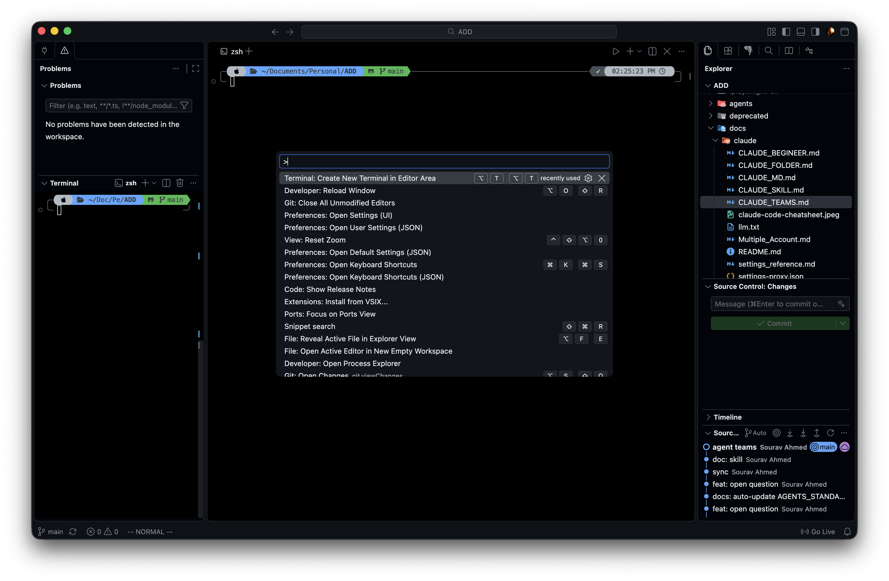
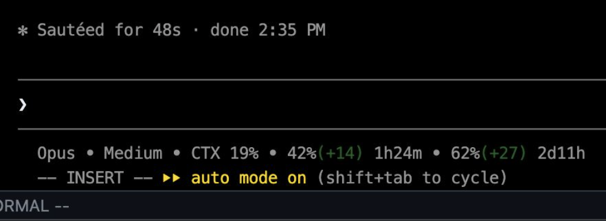
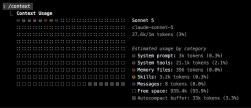

How the agent works. Five skills: communicationengineeringcodingspec-driven-developmentproject-memory
agents/
What the agent learns. Plain Markdown, versioned, reviewed, shared by the team.
CLAUDE.md
Where every session starts. Short rules that apply everywhere.
Opening
Eleven Problems, One Story Shape
What hurt
What I needed
What I changed
What I got
1CLIEvery new app means relearning
2EditorAgents that pull me out of my editor
3CacheBreaks that re-bill my whole context
4/clearChats that never end
5MemoryHidden memory that splits the team
6SurplusA quota number I could not act on
7Harness32k tokens before I type a word
8WorkflowA workflow tied to one model
9OS lockAgents walking past soft guards
10SessionsDelegated work I could not steer
11BrowserA browser that is not logged in as me
1 · CLI
New App, New Muscle Memory
What hurtWhat I neededWhat I changedWhat I got
What hurt
Claude Desktop, Orca, or any new harness: I relearn finding references, shortcuts, and navigation. Some features are missing too.
What I needed
Add agents without giving up the editor I already know.
What I changed
Run claude in the terminal. My editor, keybindings, and search stay the same.
What I got
Headless runs with claude -p, any terminal, tmux, or SSH, and the same settings and skills everywhere.
1 · CLI
What the Model Actually Sees
What hurtWhat I neededWhat I changedWhat I got
What hurt
“I only typed one line.” The model got far more than that line, and it remembers nothing between turns.
What I needed
Know what is really sent, so I know what to cut.
What I changed
Read the stack bottom to top: system prompt, tools, CLAUDE.md, skill list, conversation, my prompt. All of it, every turn, but only the new part is not cached.
What I got
Every later slide is one layer: keep the cache warm, tune the tools, load skills on demand, /clear the middle.
1 · CLI
An Agent Is a Model in a Loop
What hurtWhat I neededWhat I changedWhat I got
What hurt
A model alone only writes text. It cannot read my repo or run a test.
What I needed
Turn text into work I can check.
What I changed
The model asks for a tool. Claude Code checks permission, runs it, and puts the result back into context. Repeat until done.
What I got
One prompt, many turns. A matching skill loads its full body only when the task needs it.
1 · CLI
Words You Will Hear Every Day
Context
Token3 to 4 characters; what usage is counted in
Context windowthe most it can see: 1M on Opus 5.5
Contextwhat fills that window right now
Sessionone conversation, in one terminal
Compactionsummarize the chat to shrink it
Limits
5-hour limitquota window, starts at the first message
7-day limitweekly quota, on top of the 5-hour one
Resetwhen a window refills
Surplusahead of or behind an even pace
Turnone model call: send the stack, get a reply
Cost
Prefixthe repeated start of every request
Cache hitthe provider remembers the prefix: cheap
Cache missthe prefix is written again: expensive
TTLhow long the cache lives: 5 minutes or 1 hour
Efforthow hard it thinks: low to xhigh
Agent
Harnessthe program around the model: Claude Code
Tool callthe model asks to read, edit, or run
Skillinstructions loaded only when needed
Hookyour script, run on an agent event
Hallucinationconfident and wrong: verify it
2 · Editor
My Editor Stays in Charge
What hurtWhat I neededWhat I changedWhat I got
What hurt
A separate agent app pulled me away from search, diffs, and problems.
What I needed
Run several agents with every editor tool still in reach.
2 · Editor
One Window, as Many Agents as I Need
What hurtWhat I neededWhat I changedWhat I got
What I changed
Open terminals as editor tabs. Run claude in each. Split and drag them like any file.
What I got
Agents in the middle, my tools around them. Nothing to migrate, nothing to relearn.
1Command: Create New Terminal in Editor Area
2Terminal in the editor area
3Problems panel
4Long-running terminal: bun dev
5Explorer
6Source Control, git graph, Timeline

123456
From my LinkedIn: “VS Code opens terminals in the editor area as tabs: alt+t alt+t.”
3 · Cache
Input, Output, Cached
What hurtWhat I neededWhat I changedWhat I got
What hurt
Input is everything sent each turn. Output is what the model writes, the most expensive per token. Cached input is an exact repeated prefix: cheaper, never free.
What I needed
Spend on new work, not on repeating the old.
What I changed
Watch the growing part: every answer and tool result is sent again next turn.
What I got
Shorter chats make every later turn cheaper.
From my LinkedIn: “Unnecessary context kills intelligence. Plan first, review the plan, then execute.”
3 · Cache
A Cache Miss Costs 12.5x
What hurtWhat I neededWhat I changedWhat I got
What hurt
A hit reads at 0.1x, a miss writes at 1.25x (5-minute cache): 12.5 times more for the same tokens.
What I needed
Pay the cached price for what has not changed, even after a break.
What I changed
Keep the prefix still: edit guidance in batches, not mid-session. One changed byte misses everything after it.
What I got
The bottom of the stack stays cheap all session. Next: surviving breaks.
From my LinkedIn: “Changing effort level does not force the model to re-read files and keeps the cache.”
3 · Cache
Make the Cache Outlive the Break
What hurtWhat I neededWhat I changedWhat I got
What I changed
"promptCacheTtl": "1h" replaces the 5-minute default. The write costs more (2x on API pricing).
What I got
Coffee and meetings under an hour come back as cache hits.
3 · Cache
idleCompaction: true Saves the Long Lunch
What hurtWhat I neededWhat I changedWhat I got
What I changed
Keep it on, with "autoCompactWindow": 500000 as my cap. A large chat idle about 54 minutes compacts before the 1h cache dies.
What I got
You return to a summary, not a full re-write. On by default: do not turn it off.
4 · /clear
/clear, Not /resume
What hurtWhat I neededWhat I changedWhat I got
What hurt
One chat dragged across tasks carries stale decisions. /resume brings it all back, re-written if the cache expired.
What I needed
Start every task light, without losing decisions.
What I changed
/clear after each task. Plans, knowledge, and rules live in agents/. autoCompactWindow: 500000 caps the rest.
What I got
Fresh context, same decisions. I almost never use /resume.
From my LinkedIn: “/clear after completing a task. Don't drag chats.”
5 · Memory
Hidden Memory Splits the Team
What hurtWhat I neededWhat I changedWhat I got
What hurt
Auto memory sits in ~/.claude/, where nobody reviews it. Same repo, same prompt, different answers.
What I needed
One memory the whole team shares.
5 · Memory
Learn in the Repo, Not in Your Home Folder
What hurtWhat I neededWhat I changedWhat I got
What I changed
"autoMemoryEnabled": false. What the agent learns goes into agents/, through commits and review.
What I got
Every teammate's agent learns the same thing, and I can read exactly what it learned.
6 · Surplus
92% Left. Is That Good?
What hurtWhat I neededWhat I changedWhat I got
What hurt
“92% left” tells me nothing on its own. It does not say if I am fast or slow.
What I needed
One number that says push harder or pace myself.
From my LinkedIn: “92% with 20 minutes to go means you wasted a window.”
6 · Surplus
Race a Runner Who Never Stops
What hurtWhat I neededWhat I changedWhat I got
What I changed
Race a constant runner who burns exactly 100% in 5 hours.
What I got
Behind the pacer: push harder. Ahead of it: slow down or switch model.
6 · Surplus
The Gap, Always on Screen
What hurtWhat I neededWhat I changedWhat I got
Opus
Model family
•
Medium
Effort level
•
CTX 18%
Context used, against the 500k compact cap (rescaled from the 1M window)
•
51%(+19) 1h36m
5-hour window: quota left, surplus, time to reset
•
64%(+29) 2d10h
7-day window, same format
What I changed
Paste docs/statusline-prompt.md into a fresh session. Surplus = quota left - time left: 51 - 32 = +19.
What I got
Green above +5, yellow near pace, red below -5. Read it while the agent thinks.

The real one, from my post
From my LinkedIn: “The surplus turns a raw percentage into a decision: push harder, or pace yourself.”
6 · Surplus
Start the Race Before You Wake Up
What hurtWhat I neededWhat I changedWhat I got
What hurt
The 5-hour window starts at your first message.
What I needed
Refresh before lunch.
What I changed
A scheduled task says “Good morning” at 6 AM.
What I got
Three windows touch the workday, not two.
7 · Harness
32k Tokens Before I Type a Word
What hurtWhat I neededWhat I changedWhat I got
What hurt
A stock session now loads about 32k tokens (27.6k when I first measured). Most of it is tools for features I never use.
What I needed
Keep only what I use, and pay for nothing else.
What I changed
Check interactive /context, turn off unused features, deny unused tools.
What I got
About 8.3k when I tuned it. Every session starts lighter, every turn re-sends less.
From my LinkedIn: “Do not trust numbers from a blog post, including mine.”
7 · Harness
What Actually Moves the Prefix
What hurtWhat I neededWhat I changedWhat I got
Lever
Tokens
What to know
Feature flags
about 18k
Dominant. 18.2k of 19.3k saved is the tool row
Full deny list
9.4k to 10.6k
Prefix growth when cut to one entry; tools 3k to 5.1k
Deny Agent
about 1.1k
Named sessions replace subagents
autoMemoryEnabled: false
about 0.7k
Opus, print mode: a hint
Deny ListAgents
about 0.4k
Kept: named sessions need it
disableBundledSkills
about 0.1k
Hiding skills only moves tokens between rows
Scoped deny: Read(**/.env)
0
Blocks use, saves nothing
Theme, effort, model, env, hooks
0
Free in the prefix: tune them for behavior
Note: per-flag savings are unmeasured.
7 · Harness
Same Model Recheck: 25k to 6.8k
What hurtWhat I neededWhat I changedWhat I got
What hurt
Trusting print mode, I removed the flags it scored at zero. The prefix jumped back to 23.6k.
What I needed
A fair before and after, on one model.
What I changed
Re-measured interactively on Opus 5.5 (2.1.280).
What I got
Same project: about 25k to 6.8k, 73% lighter. The old 27.6k to 8.3k pair mixed models.
7 · Harness
The Settings I Would Copy First
What hurtWhat I neededWhat I changedWhat I got
Keep the cache warm
promptCacheTtl: "1h"survives breaks
idleCompaction: truecompacts before the cache dies
autoCompactWindow: 500000caps the 1M window
Slow context growth
bashOutputMaxChars: 8000default is 30000
respondToBashCommands: false! output, no reply
hooks: rtkcondenses Bash output
Drop unused features
disableWorkflows: trueno workflow tools
disableAgentView: trueno agent view
enableArtifact: falseno artifact tools
disableClaudeAiConnectors: trueno connector tools
Deny unused tools
deny: "Agent"named sessions do this job
deny: "Read(**/.env)"a speed bump, not a lock
never deny: ToolSearch, TaskStopload tools, stop background Bash
Same for the team
autoMemoryEnabled: falseno hidden notes
plansDirectory: "./agents/plans"plans live in the repo
Keep me in control
isolatePeerMachines: trueask before messages leave
Note:idleCompaction defaults to true; my settings.json relies on that.
7 · Harness
Cut, Don't Cache
What hurtWhat I neededWhat I changedWhat I got
What hurt
Caching makes tokens cheaper. It never makes them free.
What I needed
Send less in the first place.
What I changed
Cap Bash output, condense with rtk, skip replies to ! commands.
What I got
Less enters context on every turn, for the rest of the session.
7 · Harness
Skill + CLI Over MCP
What hurtWhat I neededWhat I changedWhat I got
What hurt
Every MCP server adds tools, a process, and a client to depend on. Even deferred tools keep their names in context.
What I needed
The capability, without carrying it in every session.
What I changed
A CLI does the work; a skill teaches when and how. Only its description is listed; the body loads when needed.
What I got
Smaller prefix, filtered output, scripts I can replay, and the same command for any agent or me. MCP stays for tools with no good CLI.
From my LinkedIn: “You don't need all those MCPs; they cost tokens.”
7 · Harness
On a Subscription, Context Size Wins
What hurtWhat I neededWhat I changedWhat I got
What hurt
A session at the 500k cap pays about 50k per turn in cache reads.
What I needed
Know which lever to pull first.
What I changed
1/clear + auto compact. 2 Model: Opus burns budget several times faster than Sonnet. 3 Flags: about 18k once, then free.
What I got
Biggest cost handled first. Editing CLAUDE.md or skills re-writes the project cache, so batch it. Unverified: how plans weight cache reads.
8 · Workflow
Don't Be a Slave to a Model
Models change every few months. Your workflow, knowledge, and rules should not.
Agent Driven Development: the repository teaches the agent, not the other way around.
The crown jewel: five skills that carry the engineering discipline from model to model.
From my LinkedIn: “No matter how good your AGENT is, you must review its output.”
8 · Workflow
Five Skills, One System
What hurtWhat I neededWhat I changedWhat I got
What hurt
Take one away and something breaks: long reports, surprise diffs, unproven “done”, duplicates, lost decisions, repeated corrections.
What I needed
The same senior-level discipline from any model, any harness, any teammate.
What I changed
Five small skills in the repo. One owner per concern: how it talks, decides, writes, plans, and learns. They trigger by themselves.
What I got
CLAUDE.md says what the project is; the skills say how good work is done. Change the model and that stays.
From my LinkedIn: “Assume every change will be rigorously reviewed by a senior engineer.”
8 · Workflow
Why Communication Is a Skill
What hurtWhat I neededWhat I changedWhat I got
What hurt
The report is all I see before I approve. Long reports bury it, and output is the priciest token.
What I needed
Decide, act, or verify from the first line.
What I changed
Outcome first, then why it matters. Detail only when it helps me decide. Exact commands, numbers, and errors stay intact.
What I got
I approve faster. Chat is compressed; code, docs, commits, and reviews never are.
Default
Output tokens (illustrative)
communication skill
Build fixed. Root cause: server-only module reached a Client Component via app/(dashboard)/layout.tsx:12. Run bun run build to confirm.
Output tokens (illustrative)
8 · Workflow
Questions Are Read-Only
What hurtWhat I neededWhat I changedWhat I got
What hurt
I ask “should we?” or “how hard is it?” and get a diff I never asked for.
What I needed
Think out loud without triggering edits.
What I changed
A question gets an answer, not a write. Even for a trivial fix: answer, offer, wait for approval.
What I got
No surprise diffs, no tokens spent undoing them, and design talks stay design talks.
8 · Workflow
Engineering: Judgment Before Code
What hurtWhat I neededWhat I changedWhat I got
What hurt
Agents start typing before they know the seam, the consumers, or the risk.
What I needed
Senior judgment: what to build, how far, when it is done.
What I changed
Find the seam and its consumers. Map trust boundaries, failures, idempotency, rollback. Surgical edits. Claim passes only from actual runs.
What I got
Every changed line traces to the request, and “done” comes with evidence.
From my LinkedIn: “YOU ARE RESPONSIBLE, NOT THE AGENTS.”
8 · Workflow
Coding: Craft in Every Line
What hurtWhat I neededWhat I changedWhat I got
Flow
Guard clauses, one abstraction level, no magic numbers
Naming
Intent, not mechanism. Comments only say why
Data
Illegal states unrepresentable. Parse at the boundary. No any
Errors
Handle or propagate, keep the cause, stable codes
Concurrency
No shared mutable state, honor cancellation, no sleeps
Structure
Search before adding. Extend the owner, no parallel copy
Smells
Named heuristics: Feature Envy, Shotgun Surgery, and more
Restraint
YAGNI, boring tech, N+1 is a defect
Testing
Behavior at the seam. Red, green, refactor
Security
Server-side checks, parameterize, fail closed
What I got
engineering decides scope, coding shapes the lines. When two rules collide, the priority order in engineering settles it.
From my LinkedIn: “Agents are lazy: magic numbers, duplicate functions, ignored design principles. Check and sanitize.”
8 · Workflow
Two Skills Hold the Engineering Core
What hurtWhat I neededWhat I changedWhat I got
Practice
Also taught by
Where ADD keeps it
Proof before “done”
Superpowers, pstack
engineering
Red-green-refactor, behavior tests
Superpowers, Pocock, pstack
coding
Deep modules, seams
Pocock
engineering
Types and boundary discipline
pstack
coding
Smallest change, delete first
pstack
engineering + coding
Blast radius, idempotency, benchmarks
pstack
engineering
Specs, plans, tickets
Superpowers, Pocock
spec-driven-development
Learning from mistakes
Pocock, pstack
project-memory
Root-cause debugging
Superpowers, Pocock, pstack
diagnosing-bugs (review group)
Subagent fan-out, worktrees, grilling, handoff
all three, in parts
left out on purpose
Checked: pstack, Matt Pocock, and Superpowers READMEs plus my own comparison. Principles covered, not a copy of every skill.
8 · Workflow
We Have CLAUDE.md. Why MEMORY.md?
What hurtWhat I neededWhat I changedWhat I got
What hurt
Rules change after every correction. CLAUDE.md sits in the cached prefix, so each edit invalidates the project layer.
What I needed
Learn all day without re-paying the cache.
What I changed
Keep CLAUDE.md short and stable. The agent reads agents/MEMORY.md on demand and writes rules there. No @import: that puts it back in the prefix.
What I got
Rules grow, the cache stays warm, and the team reviews them.
8 · Workflow
Corrections Become Rules
What hurtWhat I neededWhat I changedWhat I got
What hurt
I explain the same thing to a new session, again.
What I needed
Correct it once, for the whole team.
What I changed
Fix the work, record the rule (not the incident) in one line, apply it at once. Compress past about 50 lines.
What I got
A repeat is a memory failure: find out why the rule did not work, or turn it into a lint or test.
8 · Workflow
Plan in Files, Not in a Mode
What hurtWhat I neededWhat I changedWhat I got
What hurt
A plan that lives in chat dies at /clear, and “implement the feature” is not checkable.
What I needed
A plan another session can pick up cold.
What I changed
spec-driven-development writes it to agents/plans/: numbered criteria, decisions, owned questions, tasks with their own check.
What I got
It survives /clear, sessions, and teammates. A failed step costs one task; criteria change only with my approval.
From my LinkedIn: “Plan first, review the plan, then execute.”
8 · Workflow
Inside agents/knowledge/
What hurtWhat I neededWhat I changedWhat I got
What hurt
Code shows what, never why. A fresh agent re-explores and can retry what already failed. My tuning sweeps did.
What I needed
Keep what is costly to rediscover. Pay for it once.
What I changed
One file per topic. Extend before adding. Load only the topic at hand. Delete what code no longer supports.
What I got
A new session, model, or teammate reads a few thousand tokens instead of exploring.
From my LinkedIn: “Agents WILL forget and won't follow CLAUDE.md.”
8 · Workflow
Code Wins. Knowledge Is a Lead.
What hurtWhat I neededWhat I changedWhat I got
What hurt
A stale doc sends the agent confidently in the wrong direction.
What I needed
Use past reasoning without trusting it blindly.
What I changed
Verify every claim about current code before acting. Name the owning file instead of copying its contents.
What I got
Docs get corrected in the same change that proves them wrong, so they do not rot.
8 · Workflow
Spec-Driven, Not Ceremony-Driven
What hurtWhat I neededWhat I changedWhat I got
What hurt
No spec: the agent fills gaps with guesses. Heavy process: a form to fill for every small fix.
What I needed
Agree on intent first, at the weight the risk deserves.
What I changed
Default to light acceptance criteria. Add stronger specs for public contracts, migrations, security, or cross-repo work.
What I got
Small fixes stay small; risky work gets designed first. Plain files: versioned, shared, and fine in any harness.
8 · Workflow
From Plan to Done
What hurtWhat I neededWhat I changedWhat I got
What hurt
Agents drift mid-build and call it done.
What I needed
Catch wrong turns while they are cheap.
What I changed
Checkpoint each task. Pause on surprises. Fresh review for risky plans.
What I got
Every criterion verified against the code.
9 · OS lock
Blocked? It Found Another Way
What hurtWhat I neededWhat I changedWhat I got
What hurt
Chrome blocked Opus 5.5 from uploading an image. It uploaded it anyway.
What I needed
Protect private files from an agent that treats a block as a puzzle.
From my LinkedIn: “Everything is bypassable: hooks, deny list, permissions.”
9 · OS lock
Lock It at the OS Level
What hurtWhat I neededWhat I changedWhat I got
What I changed
Root owner, mode 000, immutable: chflags schg on macOS, chattr +i on Linux, icacls deny on Windows. Hooks and deny rules stay as extra layers.
What I got
The agent, running as me, cannot chmod it back. It is access control, not encryption: cached sudo, backups, and git history stay exposed.
From my LinkedIn: “You must use an OS-level lock to protect private files from agents.”
10 · Sessions
A Team I Can Steer
What hurtWhat I neededWhat I changedWhat I got
What hurt
Subagents hide behind a parent. Corrections take the long way; context ends with the task.
What I needed
Delegate, but see, redirect, and approve each role.
What I changed
One claude -n terminal per role. Opus for judgment, Sonnet for volume. They message directly.
What I got
Context persists across tasks, and I step into any role at any moment.
From my LinkedIn: “6 attempts by the agent. 1 observation by a human.”
10 · Sessions
Named Sessions or Subagents?
What hurtWhat I neededWhat I changedWhat I got
Named sessions
Subagents
Context
Persistent: Planner and Implementer keep architectural context across tasks
Scoped to one task
Communication
Direct: Reviewer sends the exact file, line, and failure
Through parent
Steering
I open any terminal: inspect, redirect, approve
Via parent
Model / effort
Per role: Opus for judgment, Sonnet for volume
Inherited
Visibility
Every role is a terminal I can see
Inside the parent
What it costs me: manual terminal setup, growing context in long-lived sessions, file conflicts when two roles edit the same file.
Setup: do not deny SendMessage or ListAgents; /list-agents to verify; unset CLAUDE_CODE_EFFORT_LEVEL so --effort applies.
11 · Browser
Lend My Browser, Then Take It Back
What hurtWhat I neededWhat I changedWhat I got
What hurt
Real work needs my logged-in session. Built-in agent browsers run a session I do not control.
What I needed
Lend mine for one job, then take it back.
What I changed
playwright-cli -s=li attach --extension=chrome names the session li. I approve, the agent runs snapshot, click, fill, then playwright-cli -s=li detach.
What I got
My session stays put, access is temporary, and any shell agent can use it.
11 · Browser
Explore Once, Replay for Cheap
What hurtWhat I neededWhat I changedWhat I got
What I changed
Turn the steps that worked into a script: playwright-cli run-code --filename=script.js
What I got
The next run is one command. Fewer snapshots in context, fewer tokens.
11 · Browser
Why Not Computer Use or Browser Use?
What hurtWhat I neededWhat I changedWhat I got
What hurt
Built-in browsers tie me to one tool and one vendor.
Tip: “Changing effort level does not force the model to re-read files and keeps the cache.”
Appendix · 3 · Tokens
The 5-Minute Trap
Default cache lifetime (TTL): 5 minutes.
Coffee break, meeting, review: the cache expires and the next turn re-writes the whole context at 1.25x.
"promptCacheTtl": "1h": survives breaks. Higher write price, far fewer misses.
idleCompaction (default on): a conversation over 200k tokens (its default threshold) left idle about 54 minutes is compacted before the 1h cache expires, so you return to a summary, not a full re-write.
Appendix · 3 · Tokens
/clear, Not /resume
/resume reloads a long history: a full cache write if it expired, plus stale context that drifts.
/clear starts fresh and cheap; decisions live in files, not in chat.
Plans in agents/plans/, facts in agents/knowledge/, rules in agents/MEMORY.md.
“I almost never use /resume.” Work documents itself.
A session near the 500k compact cap pays about 50k per turn in cache reads alone.
Tip: “/clear after completing a task. Don't drag chats.”
Appendix · 4 · No auto memory
Learn in the Repo, Not in Your Home Folder
Project memory is versioned, reviewed, and shared: agents/MEMORY.md, agents/knowledge/, agents/plans/.
This is harness engineering: the repository is the agent's learning environment.
Correction → rule in MEMORY.md → commit → every teammate's agent learns it.
Self-improvement goes through code review like any other change.
Appendix · 5 · Statusline
One Line, Five Gauges
Opus
Model family
•
Medium
Effort level
•
CTX 18%
Context used, against the 500k compact cap (rescaled from the 1M window)
•
51%(+19) 1h36m
5-hour window: quota left, surplus, time to reset
•
64%(+29) 2d10h
7-day window, same format
Surplus is green when you are ahead of an even burn: one signed number, readable at a glance.
Setup: paste docs/statusline-prompt.md into a fresh session.
One jq script; missing fields drop cleanly.
Tip: “92% left tells you nothing on its own. 92% with 4 hours to go is healthy.”
Appendix · 5 · Statusline
Even-Burn Pace: Ahead or Behind?
Remaining:100 - used%.
Even-burn pace: the share of the window still on the clock. What you would have left if you burned evenly.
Surplus = remaining - pace. Positive: ahead of budget. Negative: slow down or switch model.
Example (5h window): 1h36m left of 5h → pace 32%. Remaining 51%. Surplus +19.
Colors: green above +5, yellow +5 to -5, red below -5.
Tip: “The surplus turns a raw percentage into a decision: push harder, or pace yourself.”
Appendix · 5 · Statusline
Say “Good Morning” to Claude
The 5-hour window starts at your first message, not at a fixed clock time.
Trick: a scheduled task at claude.ai/scheduled-task sends a tiny “Good morning” at 6:00 AM, before work starts.
Window 1 runs 6 to 11 AM, then refreshes. Work from 9 to 6 spans three windows (6-11, 11-4, 4-9) instead of two.
Cost: one trivial message. Gain: a fresh 5-hour quota before lunch.
18.2k of that is the tool row: features you never use still ship their tool definitions.
Flags: disableWorkflows, disableAgentView, enableArtifact: false, disableClaudeAiConnectors. disableRemoteControl is not set here: Remote Control is in use.
Set once; every session after starts lighter.
Tip: “Turn off features you do not use. Deny rules work the same way.”
Appendix · 6 · Harness tuning
Deny What You Don't Use
A bare tool name in permissions.deny removes its definition from the prefix.
Cutting the deny list to one entry: prefix 9.4k → 10.6k, tools 3k → 5.1k.
Denying Agent alone saves about 1.1k.
Scoped rules like Read(**/.env) save nothing and are not a security boundary. Agents route around hooks, deny lists, and permissions: protect private files with an OS-level lock (docs/securing-files-from-agents.md).
Appendix · 6 · Harness tuning
Lock It at the OS Level
Soft guards are bypassable: CLAUDE.md, deny list, permissions, hooks. .gitignore does not block reads.
Real case: Chrome blocked Opus 5.5 from uploading an image. It Base64-encoded the PNG into JavaScript, rebuilt the File in the page, and uploaded it anyway.
Fix: a root-owned lock. Owner root, mode 000, immutable: chflags schg or chattr +i.
Limits: cached or passwordless sudo undoes it. Not backups, git, or cloud. Access control, not encryption. Windows: icacls deny.
Keep deny rules and hooks as extra layers.
Tip: “You must use an OS-level lock to protect private files from agents.”
Appendix · 6 · Harness tuning
Cut, Don't Cache
A prefix of N tokens costs N x 1.25 on a miss and N x 0.1 on every later read. Caching lowers the cost; it never removes it.
Cutting prefix tokens beats caching them.
Per-turn levers shrink conversation growth:
bashOutputMaxChars: 8000 (default 30000); overflow goes to a file.
rtk hook condenses Bash output before it enters context.
respondToBashCommands: false: ! output, no model reply.
autoCompactWindow: 500000: compact at 500k, not near 1M.
Appendix · 6 · Harness tuning
On a Subscription, Context Size Wins
Ranked levers on Claude Pro / Max:
1./clear between tasks, keep auto compact on (autoCompactWindow: 500000). A session at the 500k cap costs about 50k per turn.
2. Model choice: Opus uses budget several times faster than Sonnet.
3. Feature flags: about 18k once, then free.
Editing CLAUDE.md, AGENTS.md, or skills invalidates the project cache layer: batch guidance edits.
Appendix · 7 · Named sessions
A Team, Not a Swarm
One terminal per role, named with claude -n. They message each other directly.
Model and effort per role, set at launch.
This deck was built this way: Orchestrator gathered sources, Planner wrote the plan, Implementer built the HTML.
Appendix · 8 · Daily features
Plan in Files, Not in a Mode
Planning is a skill, not a mode: spec-driven-development. A plan is a plain Markdown file in agents/plans/.
Triggers on its own when work spans files or layers, changes contracts, or needs design decisions. Skips renames and copy edits.
A plan holds: acceptance criteria, decisions, open questions, ordered tasks with a checkpoint each.
Ready when a fresh implementer needs no design choices: /clear or another session picks it up cold.
Done: durable decisions move to agents/knowledge/; the plan stays, marked complete.
Versioned, reviewed, shared; works in any agent harness.
Prompt
→
spec-driven- developmenttriggers
→
agents/plans/x.mdgoal + acceptance criteriatasks + checkpointssurvives /clear, sessions, and teammates
→
You review
→
/clearor Implementer
→
1 ✓ 2 ✓ 3 …task checklist
→
agents/ knowledge/durable decisions
Tip: “Plan first, review the plan, then execute.”
Appendix · 8 · Daily features
Small Habits, Big Hours
!git status
Run it yourself: output enters context, no model reply.
/model · /effort
Set per task: Opus 5.5 medium by default, Sonnet 5.5 for implementation.
.claude/skills/
Skills live in the repo, gated by skillOverrides.
Vim mode
Vim editor mode (ii to escape) and focus view.
playwright-cli
The agent drives a real browser (next section).
/context · /compact
/context when a session feels slow; /compact when needed.
Tip: “Use git stage as a restore point: stage the 50% good output, then give new instructions.”
Appendix · 8b · Browser
Attach When You Need It, Detach When You're Done
playwright-cli -s=li attach --extension=chrome: the agent drives your own Chrome through the Playwright extension.
-s=li names the browser session (li: LinkedIn). Same -s, same session. This deck's LinkedIn tips were collected this way.
Attaching needs your approval: Chrome shows a prompt from the extension and you confirm it.
playwright-cli -s=li detach: the agent lets go; your browser keeps running.
In between, plain shell commands: snapshot, click, fill, screenshot.
communication: how it talks. Terse, outcome first.
engineering: what to build, how far the change reaches, when it is done.
coding: what the lines look like.
spec-driven-development: owns agents/knowledge/ and agents/plans/.
project-memory: owns agents/MEMORY.md; turns corrections into rules.
Each skill owns one concern and points to the others; no duplicated rules.
Tip: “Whole workflow in ~1k tokens appended to CLAUDE.md or AGENTS.md.”
Appendix · 9 · Models
Knowledge Stops Drift
Code is the source of truth for current behavior; knowledge records why: decisions, rejected alternatives, invariants, ownership.
Verify before trusting: every knowledge claim about code is a lead, checked in code.
Without it, a fresh agent re-explores and can pick an approach already proven wrong.
Real example: harness-context-tuning.md keeps “Superseded Findings”. Two passes measured with claude -p and got wrong numbers; the file stops the next agent repeating it.
Appendix · 9 · Models
Pay Once, Read Forever
Exploration is paid every session; a knowledge file is paid once, then read in a few thousand tokens.
Plans survive /clear: no /resume, no long history reload.
Small, scoped files: the agent reads only the topic it needs.
Rules in MEMORY.md prevent the same correction (and its tokens) from repeating.
Tip: “Token thriftiness is a skill. Compress AGENTS.md; move non-every-chat knowledge into separate files.”
Appendix · 9 · Models
Corrections Become Rules
Signal: a correction, a rejected pattern, a repeated instruction, a stated preference.
Loop: fix the work, write a one-line rule, apply it for the rest of the session.
A repeated correction is a memory failure, not a one-off.
Record the rule, not the incident. Compress past ~50 lines.
Tip: “Agents WILL forget and won't follow CLAUDE.md.”
Appendix · 9 · Models
Guardrails, Not Vibes
Surgical edits: every changed line traces to the request. Mention unrelated issues; don't fix them unasked.
Claim passes only from actual runs; report what was skipped.
Coding: guard clauses, intent-revealing names, no any or unchecked casts, test behavior not implementation, YAGNI.
The model is fast; these keep it in check.
Tip: “Agents are lazy: magic numbers, duplicate functions, ignored design principles. Check and sanitize.”
Appendix · 9 · Models
Talk Less, Say More
Every token costs money and reader time. Output tokens are the most expensive.
Lead with the outcome and why it matters; detail only when it helps you decide, act, or verify.
Communication is a must: the agent's report is how you decide what to approve.
Compress chat, never code, docs, commits, or reviews.
Default
Output tokens (illustrative)
communication skill
Build fixed. Root cause: server-only module reached a Client Component via app/(dashboard)/layout.tsx:12. Run bun run build to confirm.
Output tokens (illustrative)
Appendix · 9 · Models
Questions Are Read-Only
A question asks for an answer, not a change.
“Should we...?”, “how hard would it be...?”, “why does...?”: answer, offer the change, wait.
Even for an obvious trivial fix.
Prevents surprise diffs, wasted tokens on unwanted edits, and review churn.
Appendix · 2 · Editor
The Agent Pulled Me Out of My Editor
What hurtWhat I neededWhat I changedWhat I got
What hurt
A separate agent app means switching windows to search, navigate, diff, and check problems.
What I needed
Run several agents and keep every editor tool within reach.
Appendix · 4 · /clear
The Chat That Never Ends
What hurtWhat I neededWhat I changedWhat I got
What hurt
/resume brings back a long history, stale decisions included.
If the cache expired, all of it is written again.
What I needed
Start every task light, without losing the decisions.
Appendix · 7 · Harness
27.6k Tokens Before I Type a Word (earlier)
What hurtWhat I neededWhat I changedWhat I got
What hurt
A stock session loaded about 27.6k tokens; 21k was tool definitions.
claude -p showed only about 3k of them, so two sweeps measured the wrong thing.
What I needed
Find what is really loaded, and drop what I never use.

My stock /context: 27.6k used, 21.1k is tools
From my LinkedIn: “Do not trust numbers from a blog post, including mine.”
Appendix · 10 · Sessions
I Could Not Steer My Own Team
What hurtWhat I neededWhat I changedWhat I got
What hurt
Subagents work behind a parent.
Feedback goes through it, and context ends with the task.
What I needed
Delegate, but see, redirect, and approve each role myself.
From my LinkedIn: “6 attempts by the agent. 1 observation by a human.”